LabelLearn
HackMIT 2019 - overall winner
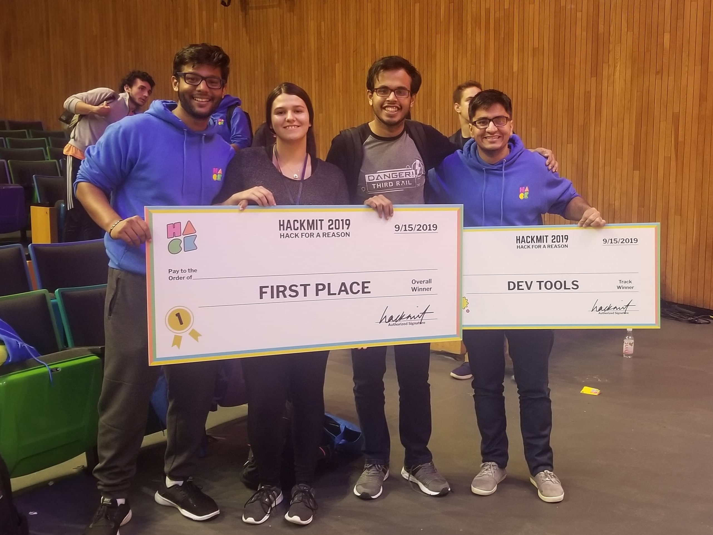
I am Sanja (Sanya) Simonovikj and I am currently pursuing my Master of Engineering (MEng) degree in Computer Science and Engineering with a concentration in AI at MIT with the class of 2021. I graduated with a Bachelor's of Science in Computer Science and Engineering at MIT with the class of 2020.
Microsoft
Data Science intern - -present
Developing intelligent components for Word, Excel and PowerPoint under the new Fluid collaborative technology

IBM Research
Research Intern - -
Qualcomm
Engineering Intern - - -
Internal tools - automatic triage of build and test failures for the Secure Systems Group
Shell
Data Science Intern - - -
Internal tools - Text summarization tool for strategy teams
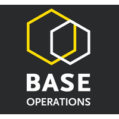
Base Operations
Software Engineering Intern - -
Developing app for street-level threat assesment
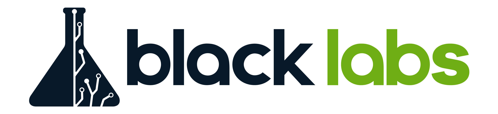
Black Labs
Software Engineering Intern - - -
Smart Digital Government - development of an assistant chatbot
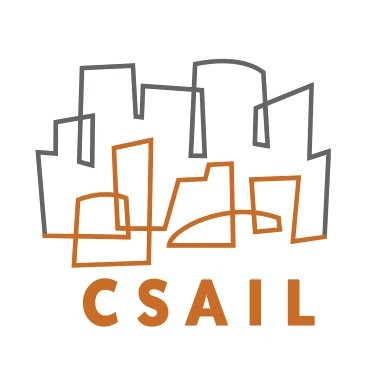
CSAIL - Improbable AI Lab
Graduate Research Assistant - - present -
Priors in Deep Learning (Computer Vision) - supervised by Prof. Pulkit Agrawal
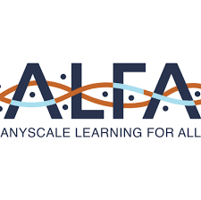
CSAIL - ALFA Lab (Anyscale Learning For All)
Undergraduate researcher - -
Code representation and malware classification - supervised by Prof. Una-May O'Reilly
MIT Electrical Engineering and Computer Science Department
Teaching Assistant - - exp. May 2021 -
Incoming Teaching Assistant (TA) for a popular Introduction to Machine Learning course (6.036)
MIT Electrical Engineering and Computer Science Department
Lab Assistant - - December 2018 -
Lab Assistant (LA) for a popular Introduction to Machine Learning course (6.036)
LabelLearn
HackMIT 2019 - overall winner

PoseNet-Art
AI@MIT Labs - applied AI at MIT
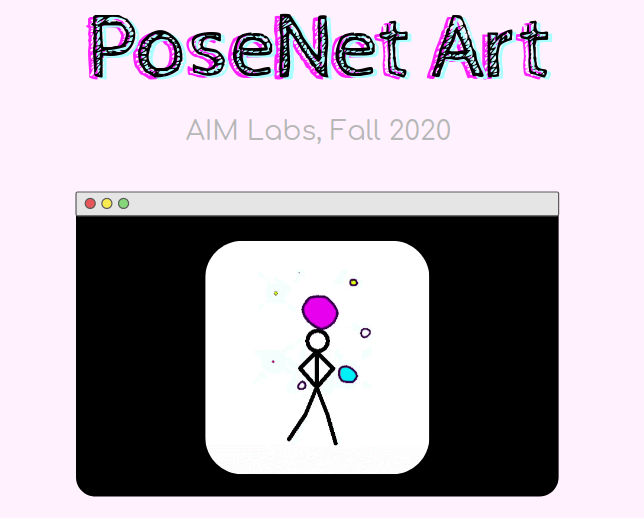
Community Watch
Web app
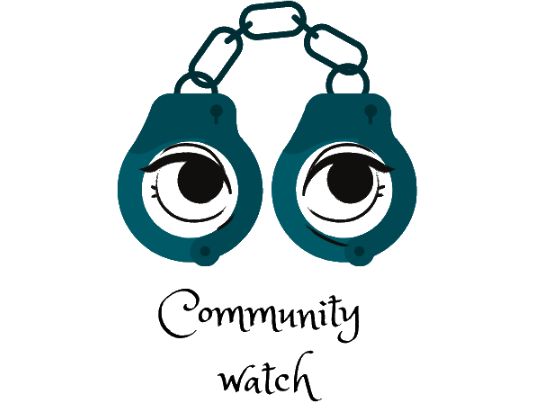
Multi-Task Learning
Final project for Meta-Learning
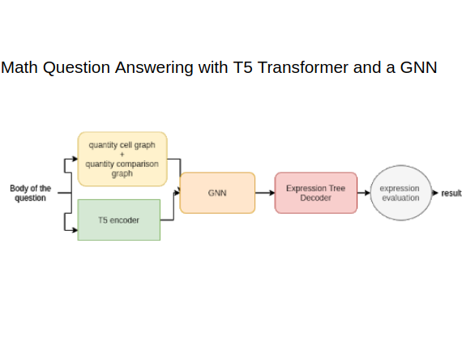
Semi-Sup. VAEs
Final project for Machine Learning
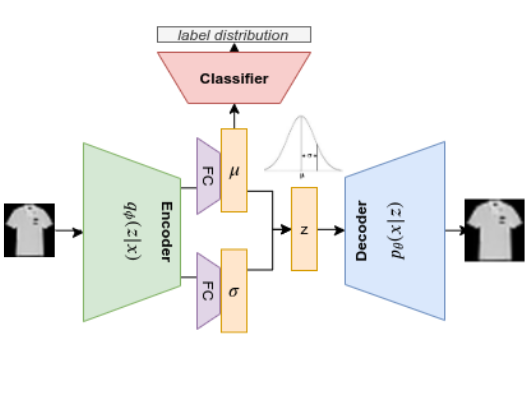
Models of code
Final project for NLP
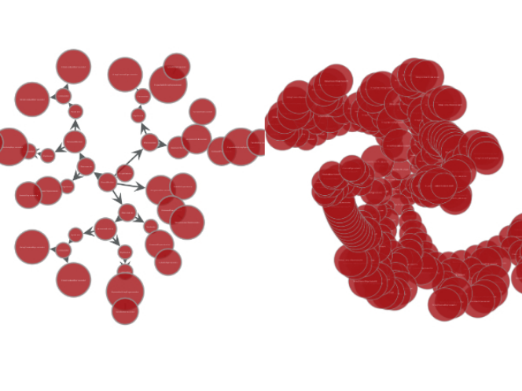
Massachusetts Institute of Technology
Master's of Engineering in Computer Science and Engineering
-
Massachusetts Institute of Technology
Bachelor's of Science in Computer Science and Engineering
-
LabelLearn - HackMIT 2019 overall winner
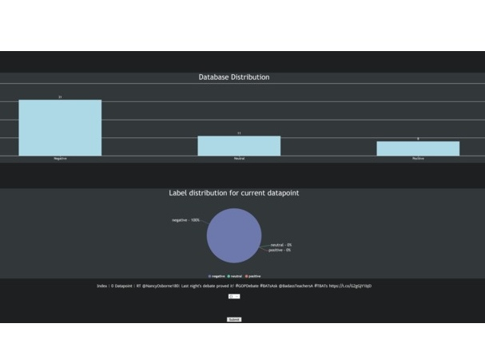
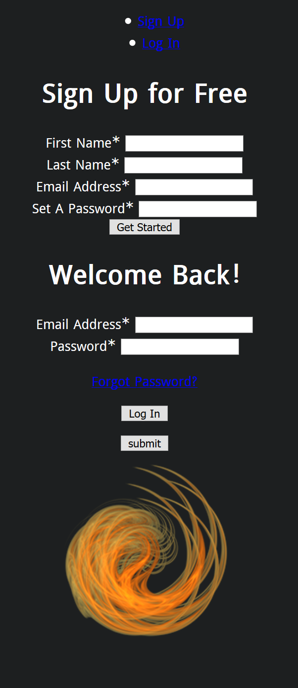
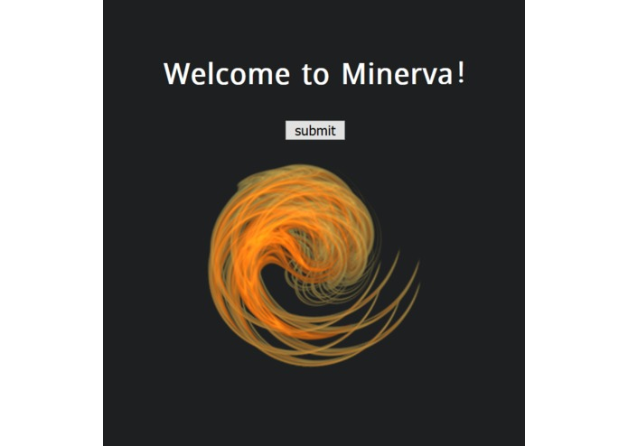
With the ubiquitous and readily available ML/AI turnkey solutions, the major bottlenecks of data analytics lay in the consistency and validity of datasets. This project aims to enable a labeller to be consistent with both their fellow labellers and their past self while seeing the live class distribution of the dataset and getting label recommendations for the next datapoint.
This project was built during the 24 hr hackathon at MIT - HackMIT 2019 and won the grand prize (overall winner) as well as Dev Tools track winner.
The team consisted of 4 members: two MIT and two U of Waterloo students. My contributions included putting the team together, proposing the project idea, working on the backend and ML portion of the project and sharing the logistics responsibilities in the team.
PoseNet-Art - AI@MIT Labs - applied AI at MIT
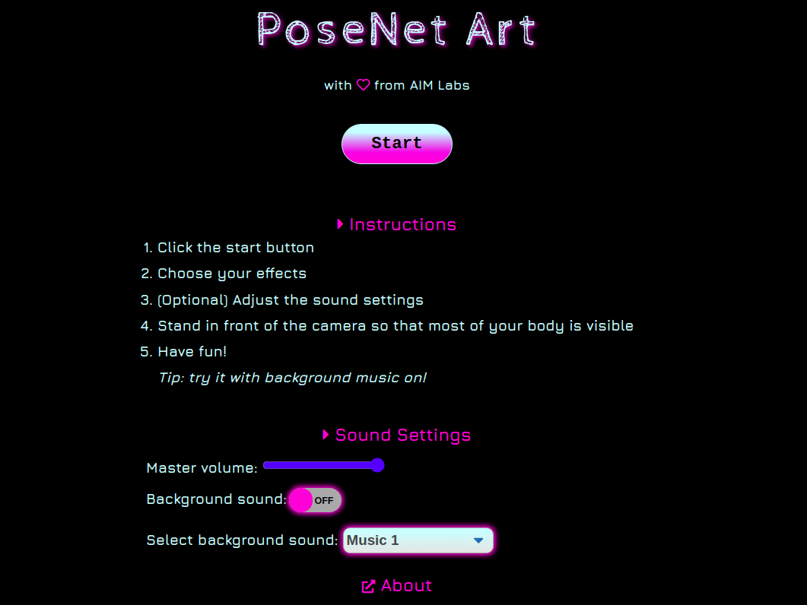
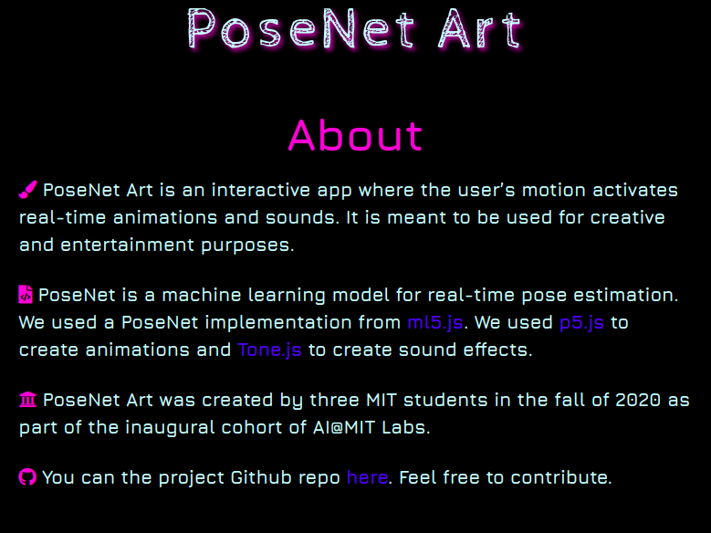
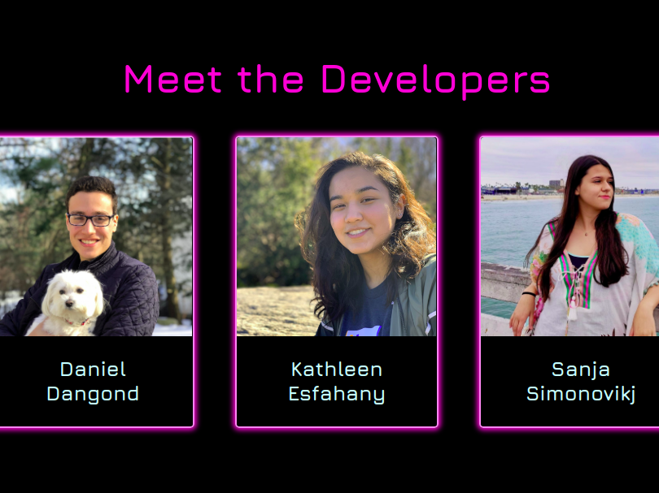
PoseNet Art is an interactive app where the user’s motion activates real-time animations and sounds. It is meant to be used for creative and entertainment purposes.
PoseNet is a machine learning model for real-time pose estimation. This project uses an implementation from ml5.js, specifically the light MobileNetV2 version. Additionally, the model runs on the client side, so there is no extermal API call overhead. It also utilizes p5.js to create animations and Tone.js to create sound effects.
PoseNet-Art was created in the fall of 2020 as part of the inaugural cohort of AI@MIT Labs.
This project was a higly collaborative effort and some of my contributions include but not are limited to adding sound effects, additional animations, front-end beautification, toggling/selection functionalities, testing, documentation.
Community Watch - Web app
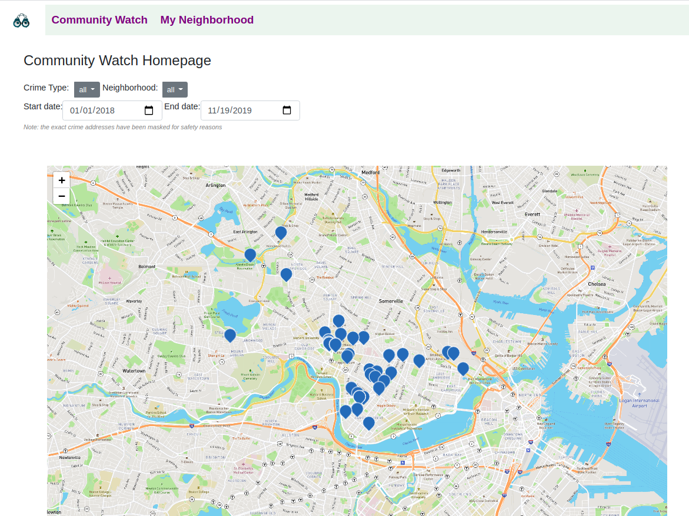
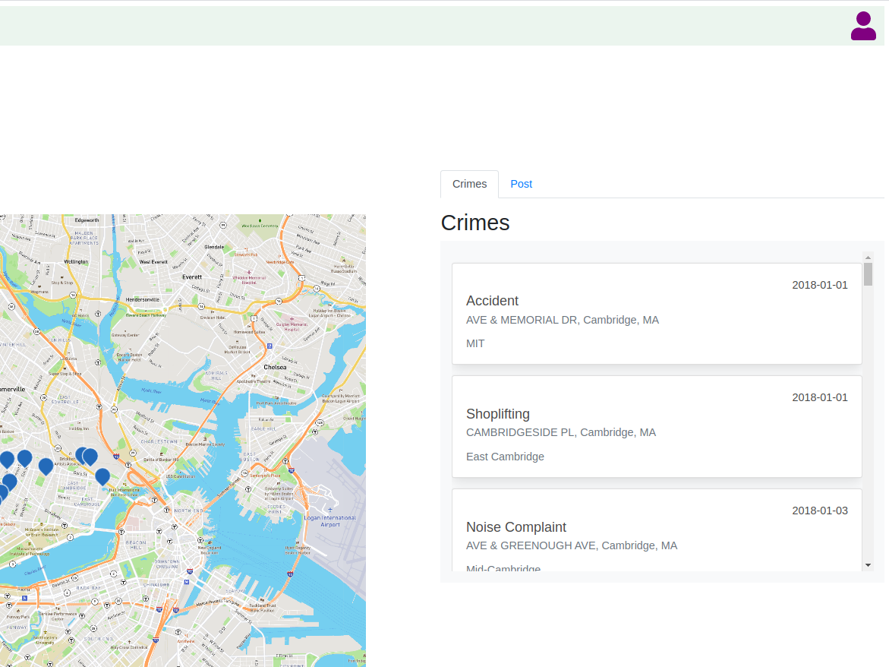
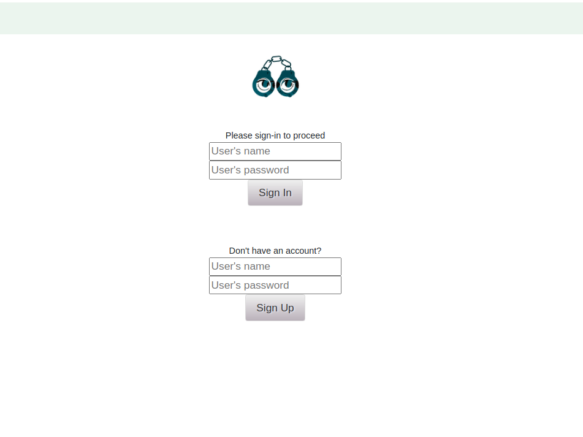
Community Watch is a web app that allows the citizens of Cambridge (MA) to stay up to date on local crimes and engage in community discussion on crimes in neighborhoods. The app features a reactive map visualization displaying crimes based on the selected filters.
The app was built toards the end of the Fall 2020 semester as part of the final project for 6.170 (Software Studio) by 4 MIT students. The goal was to apply the learned design principles as well as practice reactive programming with Vue.js. A great care was taken in regards to ethical considerations and user experience.
My contributions are precisely listed in the link below, but in general they include varied aspects of the project including initial setup, user authentication, the concept of flagging and feed, deployment, as well as nontrivial contributions on the front-end, debugging, team logistics and documentation.
Multi-Task Learning
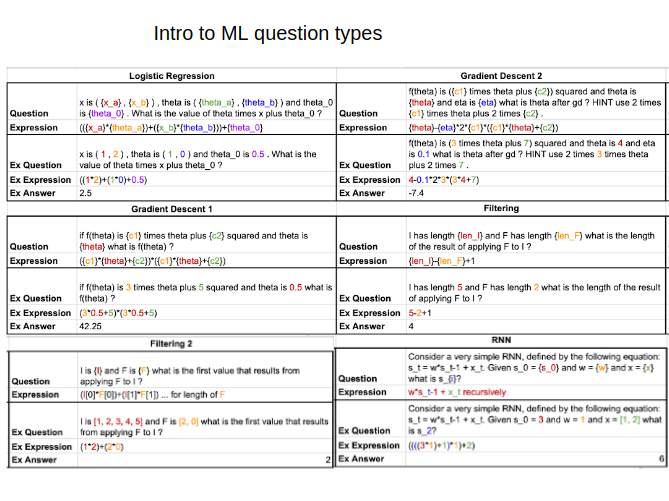
This project focuses on answering textual math questions using T5 transformers and Graph Neural Networks. It was done during the Fall 2020 semester as part of the final prject for 6.883 - a new Meta Learning class at MIT taught by prof. Iddo Drori.
In this work we looked at several approaches of Learning-to-Learn how to answer questions from several domains. We replaced GPT-3 with T5 in Measuring Massive Multitask Language Understanding and reported results with different sizes of the T5 transformer. Furthermore, we curated a dataset which can be easily extended in size that contains 6 types of questions from 6.036 - Introduction to Machine Learning course offered on MITx. We have analyzed the performance for each question type of this dataset using the T5 + GNN approach in Scalable Graph Neural Networks with Deep Graph Library. We report our results on some heuristic approaches and other less successful attempts, in the hopes that the deficiencies we have identified will be addressed in future work.
My contributions included working on all aspects of the project with a focus on technical (glcoud) setup, literature review, T5 + GNN experiments and sections of the writeup.
Semi-sup. VAEs
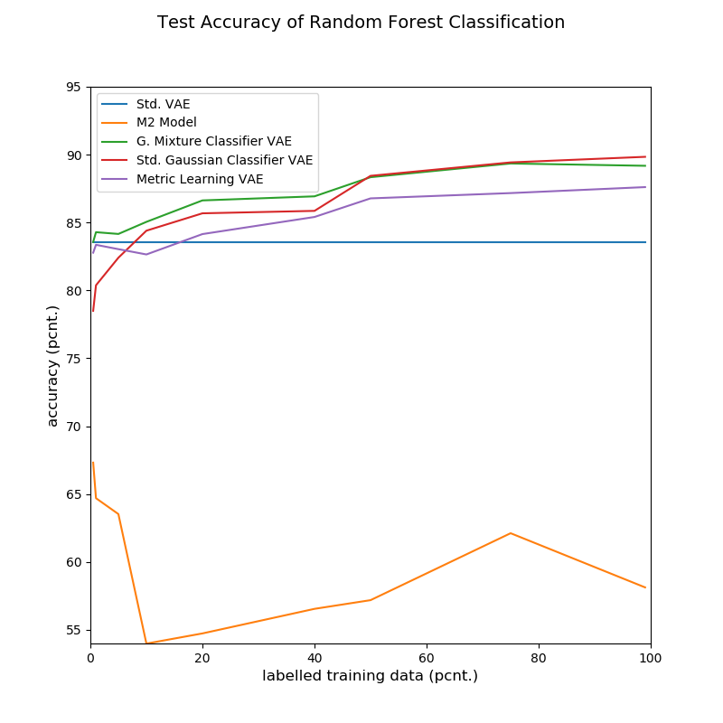
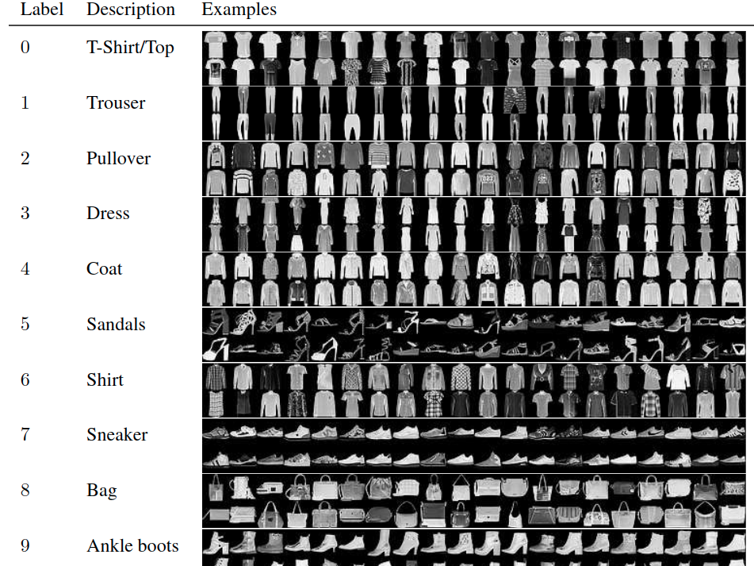
This project looks into utilizing labeled data into a normally unsupervised methods such as Variational Autoencoders. It was done during the Fall 2019 semester as part of the final project for 6.867 - a graduate advanced Machine Learning course.
In this project we have proposed several architectures which extend the vanilla VAE architecture to include label information, while still making use of all the unlabeled data to produce embeddings which can be used for downstream tasks such as classification. We found all of them to perform nontrivially better than our baseline even with small amounts of data. Gaussian Mixture Classifier VAE can predict labels with high accuracy from very few (0.5-1%) labeled training datapoints and generally outperforms the standard VAE and M2 model from Semi-Supervised Learning with Deep Generative Models on Fashion MNIST dataset.
My contributions include working on all aspects of the projects, in particular ideation, literature review, coding, experimenting and writeup.
Models of code
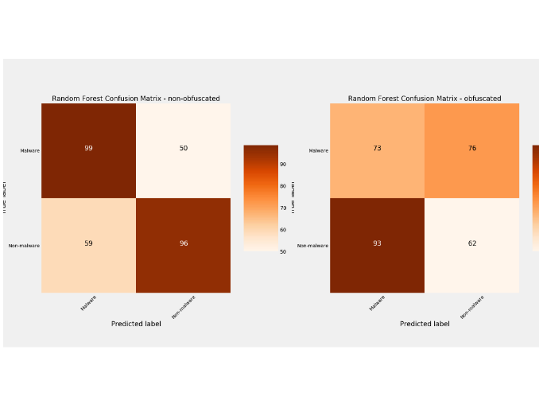
In this work, we examined the brittleness of models of code to various adversarial adjustments, including complete obfuscations. It was completed during the Spring 2020 semester as part of the final project for 6.864 - a graduate advanced Natural Language Processing course.
We have shown that obfuscated PowerShell code can completely bypass otherwise well-performing discriminative models given a representation that treats code as a natural language. While the syntactic flexibility of PowerShell potentially comes as very useful for developers, it is a problem for the malware detectors which should ideally encode something about the functionality of the code, and not only its syntactical structure.
In general, we find that models of code share many similarities to models of language, and may indeed be found to have a common intent of communication information in natural language, though code does not communicate exclusively in that channel. The similarities between code and purely natural language form a promising area of further study and collaboration for the two communities.
While the project has one overarching goal, it consists of two subprojects: one focusing on Java perturbations, one on Powershell obfuscations. They were done independently by my partner and I respectively, after which we merged our contributions in one final writeup. I fully executed the subproject focusing on Powershell obfuscations.